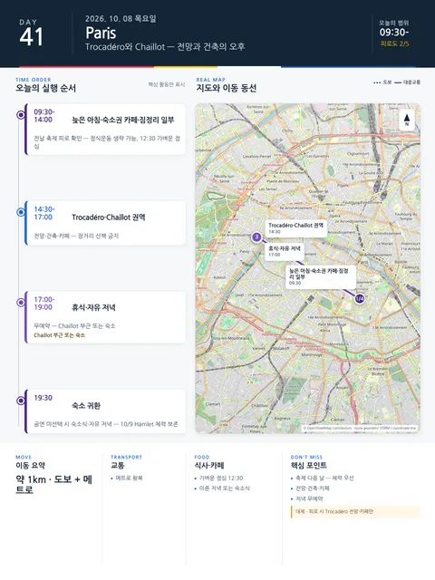

Day 41 · 10/8 목 · Paris

- 핵심 실행
- Trocadéro·Chaillot·점등 조망·송별 저녁
- 권장 출발
- 늦은 아침
- 완충
- 오전에 짐 절반 포장
- 예약
- 이 날짜로 잡힌 예약 없음 · 현황
시간표
| 시간 | 일정 | 실행 포인트 |
|---|---|---|
| 09:30–10:30 | 늦고 가벼운 아침 | 전날 축제 피로 확인 |
| 10:30–13:00 | 숙소권 카페·짐 절반 포장 | 정식운동 생략 가능. 출국 전날에 포장을 몰지 않는다 |
| 13:00–14:00 | 가벼운 점심 | 저녁이 송별식이므로 낮은 가볍게 |
| 14:30–17:30 | Trocadéro·Chaillot 권역 | 전망·건축·카페, 장거리 산책 금지 |
| 17:30–일몰 | 같은 자리에서 카페 휴식 | 점등을 보려고 다시 오지 않는다 |
| 일몰 무렵 | Trocadéro 에펠탑 점등 조망 | 이미 있는 자리 — 무료, 당일 일몰 시각 기준 |
| 점등 직후–21:30 | 송별 저녁 (상향) | 공연비 절감분으로 한 단계 상향. 장소는 숙소 확정 후 Chaillot 권역 또는 숙소 도보권에서 선정·예약 장소 미정 |
| 21:30 이전 | 숙소 귀환 | 다음 날 08:00 기상·체크아웃·공항 — 과음 금지 |
피로도
3/5
이 날의 메모
Trocadéro와 Chaillot — 점등 조망과 송별 저녁 장소 결정·예약
파리의 마지막 온전한 하루다. 다음 날은 체크아웃과 공항뿐이므로, 송별 저녁을 이 날 밤으로 옮겼다.
공연 3건(Il Barbiere·Este Mundo·Hamlet)은 비용 사유로 취소했다(2026-08-10). 그 절감분을 이 날 송별 저녁에 쓴다.
상세 실행 확인
- 최고 리스크
- 늦은 귀가·다음 날 출국
- 우선 삭제
- 송별 저녁 상향분
- 대체안
- 숙소권 송별식
- 식사·휴식
- 가벼운 점심·저녁은 송별식
- 잠금 필요
- 송별 저녁 장소·예약
Google 실행지도
Trocadéro·Chaillot과 송별 저녁
지도 펼치기
지도는 펼칠 때만 불러옵니다.
Daily Action Map

실제 좌표와 OpenStreetMap을 사용한 실행용 요약입니다. 도로·대중교통 상황은 출발 직전에 다시 확인하세요.